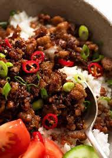

Vietnamese Caramalised Pork

Ingredients
- 500g Pork
- 1/2 an Onion
- 1 tbsp cooking oil
- 2 tsp Ginger
- 2 garlic cloves
- 1 chilli
- 2 tbsp brown sugar
- 2 tbsp Fish sauce
- 1 spring onion
- 2 cups of rice
- Chopped peanuts
Steps
- Heat oil in a large skillet
- Add the onion, ginger, garlic and chili and cook for 2 minutes.
- Add the pork mince and cook for 2 minutes or so until white all over,
breaking up the meat with a wooden spoon.
- Add the sugar and fish sauce. Stir, then leave it to cook without
touching until all the juices cook out and the pork starts caramelised – about 2 minutes.
Then stir it and leave it again, without stirring, for around 30 seconds to get
more caramelisation. Repeat twice more until caramelised to your taste.
- Serve over rice or vermicelli noodles, garnished with sliced
scallions/shallots. For a low carb, low cal option, try Cauliflower Rice!
I like to have chunks of plain cucumber and carrots on the side which is
a classic way of making Vietnamese bowls.